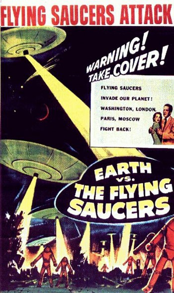
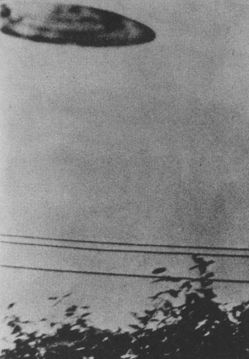
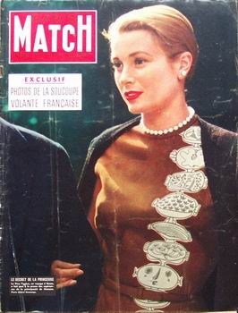

Affiche de Earth versus the Flying Saucers, sorti le 1er

Sortie de Earth versus the Flying Saucers, prétendumment basé sur le livre Flying Saucers From Outer
Space de Donald E. Keyhoe qui, en réalisant qu'il s'agissait d'une oeuvre de fiction, aurait demandé à être enlevé des crédits Barrow, R.: "Guest
blogger: Robert Barrow", Silver Screen Saucers, 26 octobre 2011.
A Natal (Afrique du Sud), Elizabeth Klarer dit avoir été
contactée par des extraterrestres et emmenée sur Vénus, où elle aurait respiré l'air pur vénusien. 4
photos noir et blanc d'une assiette Spin-O-Reno Un jouet que l'on fait tourner en équilibre sur
un bâton comme dans certains numéros de cirque jettée en l'air accompagnent son signalement. Elle dit avoir
un message des extraterrestres indiquant que la Terre doit arrêter les essais nucléaires et former un gouvernement
mondial socialiste.
La photo prise a San Bernardino. Un objet tenu près de l'objectif par la gauche ?

À San Bernardino (Californie), Michael Savage (15 ans) est étendu sur l'herbe à prendre
des photos avec son nouvel appareil, lorsqu'un objet en forme de soucoupe gris argenté passe à ce qu'il
estime 600 yards de distance, sans qu'il entende aucun bruit. Il en prend une photo qui, soumise au projet Blue
Book, sera considérée comme un canular réalisé en tenant
l'objet par la gauche, très prêt de l'objectif "Project
10073 Record Card", Blue Book < Black Vault.
Paris Match n° 381 du 28 (27?) juillet, titrant : Exclusif : Photos de la soucoupe
volante française

Dans la nuit, un bimoteur C-131 est télescopé par une sorte d'objet rapide et lourd, comme le déclarera par
la suite son pilote, le commandant Stenvers, qui en ressort par une chance inouïe. Seule la queue avait reçu le choc
et aucun blessé ne fut à déplorer. Quelque chose d'inconnu avait heurté cet avion par en dessous. Selon les
enquêteurs, ce vétéran, titulaire de plusieurs milliers de vols, se trompait : les rivets des plans de queue
sautèrent tout seuls... Autrement dit, les rivets firent une depression, rompirent toute relation avec le Convair
pour faire leur vie, sans doute...